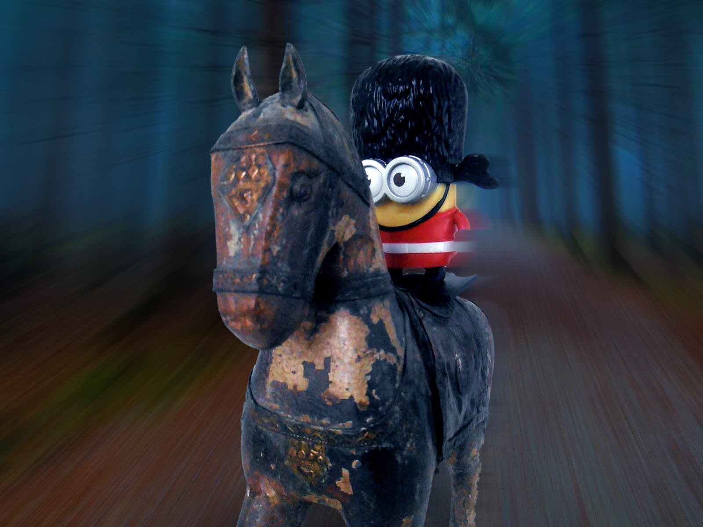
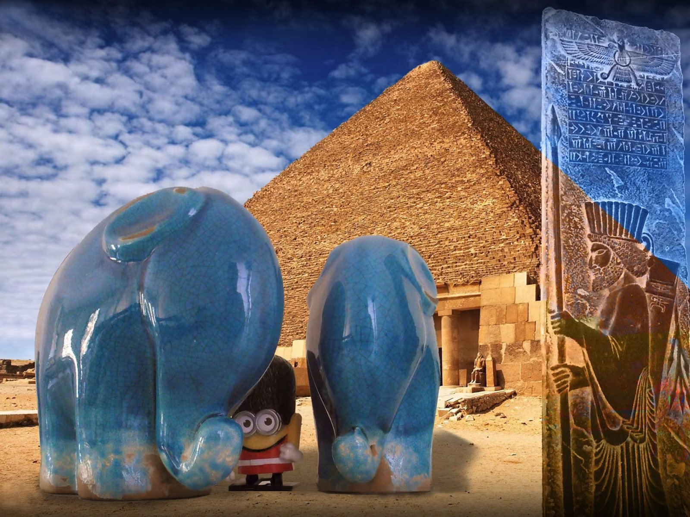
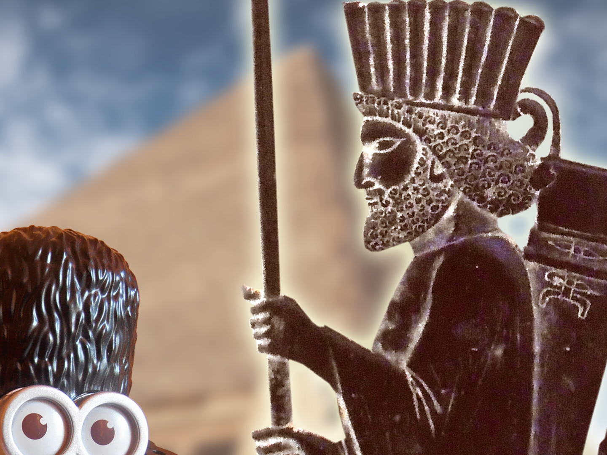

Foto Hikaye, ler
Selamlar, Meraklı dostlar…
Oğlumun çalışma masasına her oturduğumda farklı farklı oyuncaklar görüp kendimce içimden hikayeler yazıp oynuyorum. Bir taraftan da bilgisayarda işlerimi hallediyorum:)
Geçen gün yine böyle bir anda, neden içimden hikayeler yazıyorum ki. Bunları hayelden biraz da olsa gerçeğe dönüştürüp meraklı dostlarla paylaşabilirdim.
Hemen harekete geçip, bazı hazırlıklar yaptım;
- Minik bir film seti,
- Fotoğraf makinası,
- Cep telefonu kamerası,
- Bilgisayarda Adobe Photoshop – Adobe Premiere programı,
Bunlarla düşündüğüm çekimleri yapıp, bilgisayarda bazı efektlerle zenginleştirip sonuca ulaşabilirdim…
Haydi başlayalım
Bu dünya, ler, lar ve mış, miş dünyası. Bakalım bakalım neler oluyor…

Uhh… (büyük)

Hiiii… (eyvah)

Hooo… (nasıl yani)

Uuuu… (fena)

o AaaHaaa… (eveeet) – animasyonu izlemek için

macera devam ediyor – animasyonu izlemek için

Buuu, Hooo, Mmmm – animasyonu izlemek için

Uhh, Hiii, Mmmm, Haa … – animasyonu izlemek için

Uuuu, Uhh, Buuu, Hooo, Hiii, Mmmm, Haa … – animasyonu izlemek için

Hmmm, Oooo… – animasyonu izlemek için
The End
Bu maceramızın sonuna geldik arkadaşlar, başka maceralarda görüşmek üzere, hoşça kalın…
İlk yayın: https://pointpointblog.wordpress.com/2017/08/21/foto-hikaye-ler/